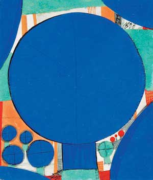

Les années 50 furent les années de ma formation et des options déterminantes, des prises de conscience illuminantes qui orientèrent mon destin et firent émerger mon personnage hors de la routine d'une culture académique et petite-bourgeoise. Ma rencontre avec Yves Klein en 1955 fut décisive. Au contact de sa présence irradiante, je compris vite que l'ultime vérité du réel réside dans l'utopie, celle qui anime les projets forts et cristallise la totalité de l'être dans sa marche vers l'absolu. Comment s'étonner dès lors qu'au-delà de la commodité des apparences je me sois attaché d'instinct aux êtres dont l'œuvre et le comportement m'incitaient à voir plus loin, à sentir plus profond, à pénétrer plus avant dans l'art, l'essentiel mystère de la vie ? Avant la rencontre avec Yves Klein, ce pressentiment d'absolu m'avait attiré vers certains créateurs "d'espaces imaginaires", tels Bellegarde ou Bertini, des "informels évolutifs" qui fréquentaient rue de Lille le studio Facchetti, l'un des hauts-lieux de l'avant-garde où trônait Julien Alvard. Une exposition m'y révéla Hundertwasser en 1954. Ce clochard errant était l'un des caractères les plus atypiques de la scène artistique parisienne, l'un des protagonistes les plus fascinants de sa marginalité. Un long corps maigre surmonté d'une tête anguleuse. Deux yeux de velours effilés en amande lui mangeaient le visage. Il pratiquait une peinture inclassable d'où émergeaient, en concurrence avec des motifs spiraloïdes abstraits, des personnages à tête ronde barrée de longs yeux. Une peinture effectuée sur des supports de fortune, mais qui témoignait d'un grand raffinement technique. Les couleurs étaient d'une intensité surprenante. Les visiteurs qui allaient voir cet autrichien pas comme les autres dans le pavillon de Saint-Mandé dont il était l'hôte, passaient de surprise en surprise. À chaque question, la réponse était "René Brô". Brô, son maître et son ami, son initiateur à l'art moderne, le guru de sa vision. Hundertwasser aux beaux yeux ("Bei occhi", comme je l'ai nommé, en hommage à tous les portraits de la Renaissance dont son regard semble issu) m'a donné envie de connaître celui auquel il se référait avec tant de déférence. Mon premier contact avec Brô s'opéra à travers son œuvre à l'occasion d'une exposition de groupe chez Augustinci, à la galerie Rive Gauche, à laquelle il participait, en mars 1955. La clé de lecture parfaitement éclairante est le court texte que Julien Alvard lui a consacré : "ce que l'on découvre dans cette peinture aux couleurs intenses, c'est une sorte de décalcomanie de l'âge d'or. Des yeux sans souvenirs éclairent des visages sereins dans une nature où toutes les manifestations de la vie prennent une forme planétaire..." La peinture de Brô est en effet intemporelle dans sa sérénité. Elle est magique dans la grâce de ses horizons transparents et l'intensité de sa lumière, tout autant que dans la bonhomie de ses visages de femmes et ses arbres ronds. Ses paysages évoquent l'infinie douceur de la Toscane et de l'Ombrie. "L'école siennoise est pour moi l'un des grands sommets de l'art universel", déclare-t-il à "Arts" en janvier 1958. Sienne, d'accord, mais aussi Spoleto et Gubbio. La peinture de Brô est le décor idéal pour les "fioretti" de François d'Assise. Je me suis longtemps demandé comment on pouvait créer une telle peinture, saine et fraîche, rustique et rutilante dans une époque de fermentation culturelle et d'hystérie moderniste, comme celle des années 50-60. Une telle attitude à contre-courant pourrait s'expliquer par le détachement. Mais Brô vivait intensément son époque, était curieux de tout, s'intéressait à tout. Il faut en chercher plutôt la raison dans un don supérieur d'ironie douce. Je crois fermement, et cela depuis le 15 janvier 1958, que Brô s'est installé une fois pour toutes dans sa peau de "dernier des Arcadiens". Je l'ai affirmé à l'occasion de la première exposition personnelle de Brô chez Iris Clert. Je ne pouvais pas prévoir que dix ans plus tard, Iris Clert allait dénicher un autre "Arcadien" en la personne d'Uriburu ! L'ironie douce fonctionne tout naturellement à rebours de l'histoire et cela me rassure, en 1958 comme en 1968. L'ironie douce au centre d'une stratégie globale du comportement, cela peut expliquer bien des choses. A commencer par la phonétisation du patronyme. Né Brault pour l'état civil, il devient très tôt Brô pour son identité artistique. Tout le monde de l'art l'a connu sous le nom de Brô, avec un accent circonflexe saugrenu qui faisait rire jaune tous les typographes. Sa femme Micheline qui l'a toujours connu en tant que Brô, m'a appris qu'à l'instar de Dubuffet, il avait pratiqué les joies de l'écriture phonétique ! L'humour de Brô fut le meilleur atout de sa progressive, lente insertion au sein du "brain trust" de la galerie Iris Clert. Et il fallait beaucoup d'humour pour s'imposer au sein de ce microcosme délirant où se côtoyaient les spécimens les plus variés de la marginalité d'avant-garde. Jeune divorcée Iris pensait à juste titre que sa pension alimentaire pouvait servir à quelque chose de plus intéressant que l'entretien exclusif de son jeune enfant. Quoi faire ? Madame Richebé, sa mère penchait pour l'ouverture d'une brocante d'antiquités. Mais c'était sans compter avec les artistes grecs de Paris, qui avaient flairé dans leur accorte compatriote la graine exubérante d'une Mélina Mercouri des terrains vagues de l'art. Takis et Tsingos eurent vite fait de la convaincre d'ouvrir une galerie caravansérail destinée à tous ceux dont personne ne voulait, à cause de leurs idées étranges et surtout hérétiques par rapport au dogme totalitaire de l'école de Paris. Le Paris de l'establishment contemporain vivait dans la hantise de l'irrésistible ascension de New-York vers l'hégémonie mondiale de l'art. New-York allait se substituer à Paris comme capitale : pour éviter cette redoutable échéance, les grands marchands parisiens, Leiris, Maeght, Dubourg avaient créé une véritable mafia anti-américaine dont les pilotes étaient la Galerie de France et la Galerie Charpentier. L'école de Paris se réclamait des peintres figuratifs de la tradition française. Mais le succès croissant de l'expressionnisme abstrait lui avait fait monter, en symétrie oppositionnelle, la machine de guerre du "post cubisme abstrait". En dehors de ces deux composantes, point de salut pour les avant-gardes parallèles et les démarches individuelles marginales. La scène artistique de l'époque était considérablement réduite par rapport à celle d'aujourd'hui, et l'état mettait sagement un point d'honneur à ignorer l'art contemporain. Informel et cinétisme étaient enfermés dans leurs petits ghettos, ceux de Michel Tapié et de Denise René. La jeune génération d'après-guerre avait bien peu de locaux à sa disposition, les galeries-laboratoires se comptaient sur les doigts de la main. La galerie Colette Allendy était un mythe. Le centre Saint-Jacques, tenu par le Père dominicain Vallée était la providence des artistes en soif d'exposition. Très vite la galerie Iris Clert allait devenir la version laïque de cette Armée du Salut. C'est là d'ailleurs qu'Iris allait commencer à compenser son inculture initiale : sur le tas, en faisant, entre les jours ouvrables, ses premiers essais d'accrochage. Iris Clert ouvre sa galerie au 3 rue des Beaux-Arts en février 1956. Ce lieu qui abritera certains des exploits de la préhistoire du nouveau réalisme est à peine plus grand qu'un débarras assorti d'une vitrine. Il va calamiter les espoirs d'une foule de débutants inconnus qui n'ont aucune chance d'exposer ailleurs. Iris n'aura que l'embarras du choix : aux innocents les mains pleines ! Ses décisions seront le double fruit des impulsions de son instinct et des avis de son astrologue. Paradoxalement, à cette époque Brô ne se débrouille pas si mal que ça. Il expose à la Galerie Mai, chez Augustinci à la Rive Gauche, et bien entendu chez le Père Vallée au centre Saint-Jacques. Bellegarde, qui travaille comme assistant au centre, me confie un jour : "le système de Brô est un des seuls aspects de la figuration capables de frapper l'œil aujourd'hui". Le mot est lâché : l'âge d'or de Brô est le produit d'un système, d'un code conceptuel de la nature. Un code qui sera reconnu par le boss Raymond Nacenta qui l'invitera à participer à son exposition annuelle de "l'école de Paris" : en 1960, il est vrai, l'année de la déconfiture française dans la guerre des marchés Paris - New-York ! Les destins de Brô et de Hundertwasser qui s'étaient soudés lors de leur voyage en Italie en 1949, une osmose qui trouve sa culminance dans l'œuvre commune de 1950, La pêche miraculeuse ,vont se distancer et poursuivre leur cheminement autonome, sans que s'altère la fondamentale complicité du cœur et de la tête, qui les unit. Brô fera en 1984 le voyage en Nouvelle-Zélande pour y joindre son ami, via Tahiti. Brô, qui a connu Iris Clert au centre Saint-Jacques va peu à peu dériver sur son orbite et côtoyer la foule hétéroclite des abonnés. Son entrée dans la galerie est discrète. Il n'y fera sa première exposition personnelle qu'en janvier 1958 : neuf mois après l'exposition des monochromes bleus d'Yves Klein, qui avait consacré la complicité opérationnelle entre Iris et Yves, et la place prédominante que ce dernier allait occuper dans la galerie jusqu'à la fin 1960. L'influence croissante de Klein remettait en question la place prépondérante occupée jusque-là par Takis. L'antagonisme entre les deux hommes atteignait sa culminance à la fin de l'année 1960 lors de leur "querelle de l'espace". L'espace était à l'ordre du jour : le cosmonaute Gagarine, à la rentrée de sa promenade dans l'espace, avait déclaré qu'il avait vu la terre bleue, ce qui avait conforté l'intuition d'Yves Klein. Le monochrome avait en effet peint un globe terrestre tout en bleu, comme signe emblématique de l'époque "IKB". En octobre 1960, après la constitution du groupe des nouveaux réalistes, et lors de sa première manifestation collective au festival d'avant-garde organisée par Jacques Poliéri au parc des expositions de la Porte de Versailles, Yves Klein publie, à la première page de son "Journal d'un seul jour", la fameuse photo de son saut dans le vide. Takis, le protagoniste de l'art électro-magnétique, avait eu l'idée d'utiliser le procédé pour envoyer un homme dans l'espace, ce qu'il fit en décembre 1960 chez Iris Clert. Auquel des deux artistes revenait le bénéfice de l'antériorité de l'idée ? Iris Clert, déçue par la lourdeur de la démonstration de Takis (tout un appareillage imposant pour une lévitation de quelques centimètres...) préférait, sans le dire ouvertement, la belle métaphore conceptuelle d'Yves Klein. Nous nous sommes trouvés ainsi, Brô et moi, confrontés simultanément à cet épineux problème, et j'ai réalisé combien les sympathies naturelles de Brô le portaient vers Yves Klein. Une attirance qui s'amplifia au fur et à mesure que s'affirmait chez le peintre monochrome l'alchimie de sa vision cosmogonique avec l'architecture de l'air et son idée d'un retour à l'état de nature par l'usage approprié d'une technologie inspirée. Ce "vide plein", support de lévitation, ne se profilait-il pas, implicitement, dans les paysages de Brô, où la nature se plaît à nous faire pressentir à la fois le rappel et le retour de son âge d'or ? Lorsqu'en octobre 1961 paraît le premier Iris Time, le bulletin de la galerie, Brô en devient la cheville ouvrière, l'élément de base du "brain trust" où se mêlent les influences individuelles, les initiales, celles de Takis et d'Yves Klein, suivies de celles de Tinguely et d'Arman et enfin celles, un peu plus postérieures, de Pol Bury, Van Hoeydonck et Stevenson. Dans ses écrits, Brô a maintes fois l'occasion d'exercer sa pratique de l'ironie douce et d'en préciser les contours. Sa sensibilité, aiguisée par la fréquentation assidue de l'école italienne, était très fine. Son sens de la condition actuelle de l'artiste était très pragmatique. Il comprenait bien les difficultés matérielles de ses collègues pour les assumer lui-même, et il en était aussi de même lorsqu'il s'agissait des contorsions financières d'Iris Clert. Au sein des pires éclats "à l'orientale" d'Iris Clert, il savait déclencher en elle le rire libérateur. Il avait une intelligence innée des situations humaines, et surtout des plus contradictoires d'entre elles, celles que les artistes ont le génie d'inventer. Il aura été d'un bon conseil pour Iris Clert et aura contribué à la tirer de maintes situations épineuses. Brô avait l'intelligence aiguë des rapports humains, parce qu'il aimait l'homme. Et il aimait l'homme comme il le faut, c'est-à-dire sans illusion sur ses vertus et sur ses limites. A la biennale de Venise en 1964, Brô fait partie de la sélection présentée au pavillon français. Iris y organise sa "biennale flottante" avec sa fougue habituelle. Absorbée par son entreprise, elle en oublie Brô qu'elle abandonne à son sort officiel. Ce dernier surmontera vite son irritation. Cet esprit de tolérance humaniste le rendait naturellement sympathique : il émanait de lui la douceur subtile qui imprégnait ses toiles. Lors d'une exposition en 1962, Iris Time publia le référendum Brô : oui à Brô pour 91%. Au-delà de l'humour de l'opération, c'était le pouls du microcosme artistique qui était pris. Evoquer Brô pour moi aujourd'hui, c'est évoquer la période cruciale de l'autre face de l'art à Paris durant les années 50 et 60 : l'histoire d'un quartier ou d'un village culturel de haut voltage dont les protagonistes vivaient à plein régime les derniers moments d'un Pompéi moderne, la société industrielle à qui ils ont donné les lettres de noblesse d'une apogée finissante. La profondeur de leurs engagements et la portée de leurs intuitions leur ont permis d'échapper à l'empreinte et à l'usure du temps. Tout s'est passé comme si Brô avait prévu, dans son for intérieur comme à leur contact, l'ampleur du phénomène. Et en abordant la condition post-moderne de l'après 68, il a gardé le même sourire serein. C'est entre le pôle Hundertwasser et le pôle Klein que je situe mon approche référentielle de Brô. Le premier regroupe les affinités sensibles, le second les affinités spirituelles, bien que certaines ondes du champ magnétique sont susceptibles d'interférences. L'intensité de la couleur, par exemple : quelle est la part qui se réfère à Hundertwasser et quelle est la part qui se réfère à Klein ? Les couleurs intenses chez Brô mènent à l'onirisme du vide et à l'immatériel. Il y a eu certes une osmose sensible entre les visions initiales et formatives d'Hundertwasser et de Brô, mais ils ont joué l'un et l'autre le rôle d'agents de catalyse réciproque au sein du processus de communication. Ils en sont sortis identiques et autonomes. Entre Yves Klein et Brô s'était instauré un pacte de complicité implicite, occulté à la fois par la puissance monolithique de l'exubérance visionnaire du premier et la réserve naturelle du second. Mais s'il n'était pas apparent, l'accord synchronique existait et fonctionnait bien. Jamais Brô ne s'est servi de son rapport privilégié avec Iris Clert pour provoquer des interférences dans la relation caractérielle Iris-Klein, à l'inverse de Takis et de Pol Bury, par exemple. Cet accord entre les deux hommes est resté inavoué par ce qu'il n'avait pas besoin d'être clairement explicité. Il traduisait la manifestation d'un parallélisme existentiel profond. Brô était lui aussi un adepte du judo, qu'il pratiquait au centre culturel américain du Boulevard Raspail où Yves enseigna les arts martiaux jusqu'en décembre 1959. Brô était un lecteur omnivore et dévorant, Yves entretenait une relation exclusive avec un certain nombre d'auteurs dont les livres jalonnaient sa réflexion active sur la spiritualité. Dans le domaine de l'ésotérisme, leurs rencontres sont nombreuses : la cosmogonie des rose-croix, le livre des morts tibétains. Le journal de Delacroix et ses considérations sur l'ineffable pictural furent longtemps leur lecture de chevet. Brô et Klein s'intéressaient à la chevalerie : ils furent tous les deux adoubés chevaliers de l'ordre de Saint-Sébastien en l'église Saint-Nicolas-des-Champs. Cette ouverture sur la même vision sublimante de l'univers se traduisait tangiblement par un souci technique commun : le traitement du pigment pur, l'élément de fixation picturale de la couleur, la marque de l'énergie cosmique. L'alchimie chromatique illustrait en eux un goût optimiste d'une éternité à jamais rénovée et rédimée par l'apocatastase. Ils savaient tous les deux que leurs concepts respectifs de l'âge d'or comportaient une dimension d'auto-similarité que Mandelbrot pourrait qualifier aujourd'hui de "fractale". Une dimension spatiale : la qualité suprême du vide, réceptacle de la double potentialité du feu. Entre le feu qui brille et le feu qui brûle, Yves Klein et René Brô ont résolument opté pour la lumière du paradis contre la cendre de l'apocalypse. Telle est la force intemporelle du lien qui les lie à jamais dans ma mémoire, et je suis heureux d'en porter témoignage (1). Paris-Andros-Nice-Paris Juillet-Août 1996
le feu qui brille. par pierre restany
